Show/Hide Code
library(tidyverse)
library(hrbrthemes) # hrbrthemes 提供了更适合排版的主题
library(viridis) # viridis 提供了好看的色盲友好型颜色
library(ggdist) # ggdist 提供了半小提琴图和云雨图
library(patchwork) # patchwork 用于图形拼接
library(ggExtra) # ggExtra 用于 ggplot2 散点图的边际图library(tidyverse)
library(hrbrthemes) # hrbrthemes 提供了更适合排版的主题
library(viridis) # viridis 提供了好看的色盲友好型颜色
library(ggdist) # ggdist 提供了半小提琴图和云雨图
library(patchwork) # patchwork 用于图形拼接
library(ggExtra) # ggExtra 用于 ggplot2 散点图的边际图箱线图又叫盒须图，展示数据的中位数(median)、上下四分位数(Quartiles)、四分位距(IQR)、须线(Whiskers)和异常值(outlier)。
这是说明箱线图构成的示意图： 

但是，这种信息的总结也有个大问题——无法显示数据的分布情况。例如：正态分布可能看起来与双峰分布完全相同。因此，考虑用小提琴图或脊线图。
# 创建数据集
data1 <- data.frame(
name = c(
rep("A", 500),
rep("B", 250),
rep("B", 250),
rep("C", 20),
rep('D', 100)
),
value = c(
rnorm(500, 10, 5),
rnorm(250, 13, 1),
rnorm(250, 18, 1),
rnorm(20, 25, 4),
rnorm(100, 12, 1)
)
)
data1 |>
ggplot(aes(x = name, y = value, fill = name)) +
geom_boxplot() +
scale_fill_viridis(discrete = TRUE) + # 好看的色盲友好型颜色,离散变量
theme_ipsum() +
theme(legend.position = "none") +
labs(x = "") +
ggtitle("A somewhat misleading boxplot") 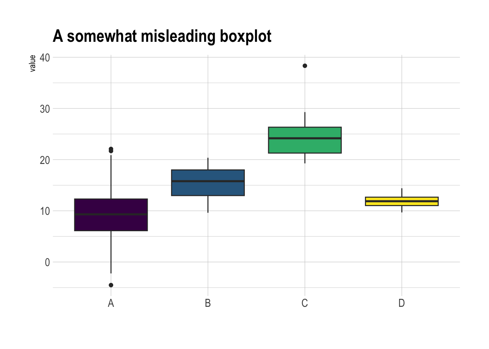
适合数据量不太大的情况
data1 |>
ggplot( aes(x=name, y=value, fill=name)) +
geom_boxplot() +
scale_fill_viridis(discrete = TRUE) + # 好看的色盲友好型颜色,离散变量
geom_jitter(color="grey", size=0.5, alpha=0.5) +
theme_ipsum() +
theme(legend.position="none") +
labs(x = "") +
ggtitle("A boxplot with jitter")
发现:
组 C 样本量小。在得出组 C 的值高于其他组的结论之前，要考虑样本量.
组 B 呈现出双峰分布(y = 18 和 y = 13),但是箱线图中看起来和组 A 并无区别.
# 显示样本量
sample_size = data1 |> group_by(name) |> summarize(num = n())
data1 |>
left_join(sample_size) |>
mutate(myaxis = paste0(name, "\n", "n=", num)) |>
ggplot(aes(x = myaxis, y = value, fill = name)) +
geom_violin(width = 1.4) +
geom_boxplot(width = 0.1, color = "grey", alpha = 0.2) +
scale_fill_viridis(discrete = TRUE) +
theme_ipsum() +
theme(legend.position = "none") +
labs(x = "") +
ggtitle("A violin plot")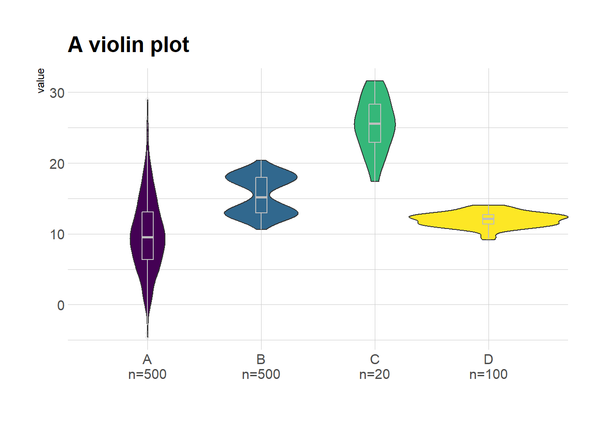
看了就知道,云(半小提琴)+雨(散点)的组合。
data1 |>
ggplot(aes(x = factor(name), y = value, fill = factor(name))) +
# 添加半小提琴图（显示分布）
stat_halfeye(
adjust = 0.5,
justification = -0.1,
.width = 0,
point_colour = NA
) +
# 添加散点（显示原始数据点）
stat_dots(
side = "left",
justification = 1.1,
binwidth = 0.25
) +
# 设置色盲友好型配色
scale_fill_viridis(discrete = TRUE) +
theme_ipsum() +
theme(legend.position = "none") +
labs(x = "") +
ggtitle("A raincloud plot example") 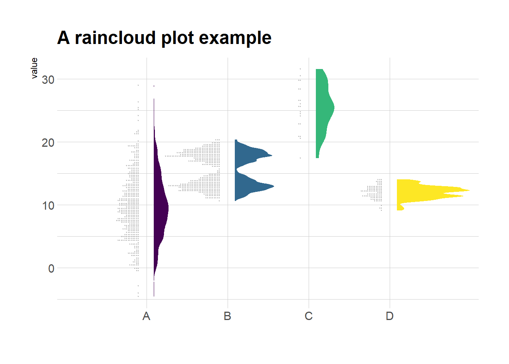
把头顺时针旋转90度(或交换R代码X轴和Y轴)，就更像云雨了
甚至还可以再加上箱线图
data1 |>
ggplot(aes(x = factor(name), y = value, fill = factor(name))) +
# 添加半小提琴图（显示分布）
stat_halfeye(
adjust = 0.5,
justification = -0.2,
.width = 0,
point_colour = NA
) +
# 添加箱线图
geom_boxplot(
width = 0.12,
outlier.color = NA,
alpha = 0.5
) +
# 添加散点（显示原始数据点）
stat_dots(
side = "left",
justification = 1.1,
binwidth = 0.25
) +
# 设置色盲友好型配色
scale_fill_viridis(discrete = TRUE) +
theme_ipsum() +
theme(legend.position = "none") +
labs(x = "") +
ggtitle("A raincloud plot example") 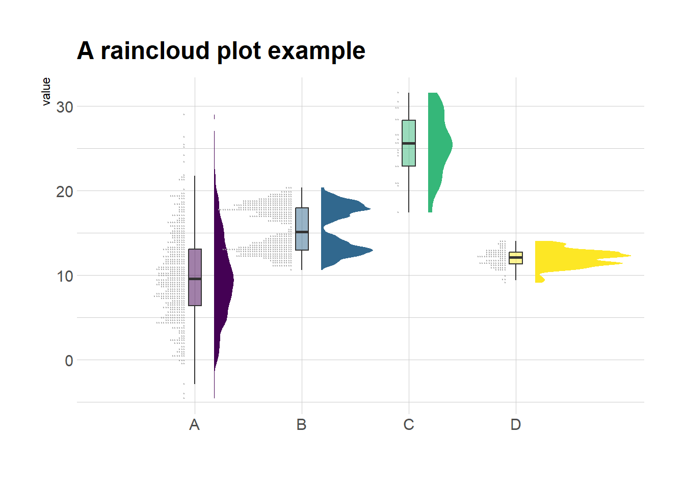
主要是geom_boxplot()函数.
ggplot(mpg, aes(x = class, y = hwy)) +
geom_boxplot()ggplot(mpg, aes(x=class, y=hwy)) +
geom_boxplot(
color="blue", # 箱线图边框颜色为蓝色
fill="blue", # 箱体填充颜色为蓝色
alpha=0.2, # 箱体透明度为0.2，便于观察重叠部分
notch=TRUE, # 显示缺口，用于比较中位数是否有显著差异
notchwidth = 0.8, # 缺口的宽度
outlier.colour="red", # 异常值点的边框颜色为红色
outlier.fill="red", # 异常值点的填充颜色为红色
outlier.size=1 # 异常值点的大小为3
)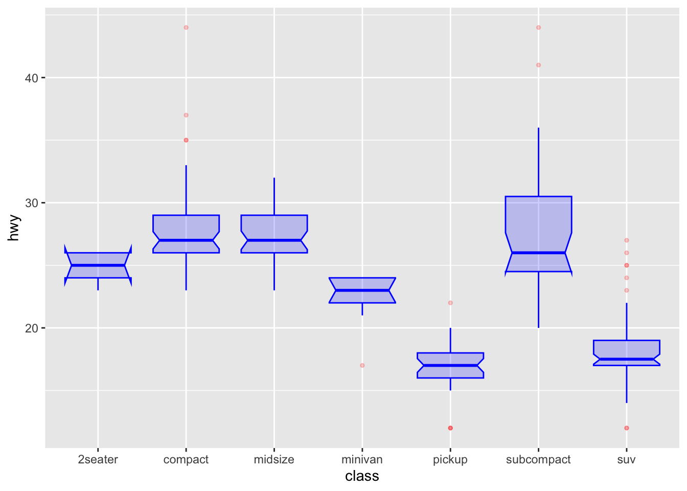
mpg |>
# fct_reorder() 函数排序
ggplot( aes(x=fct_reorder(class, hwy, .fun='median'), y=hwy)) +
geom_boxplot()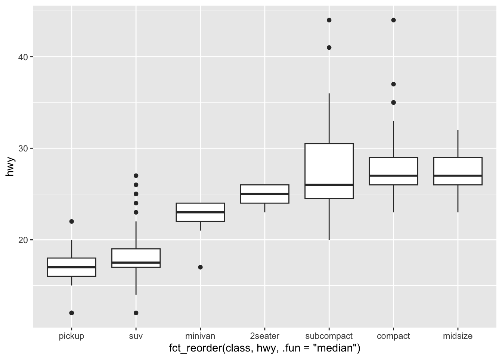
p1 <- ggplot(mpg, aes(x=class, y=hwy)) +
geom_boxplot(color="red", fill="orange", alpha=0.2)
p2 <- ggplot(mpg, aes(x=class, y=hwy, fill=class)) +
geom_boxplot(alpha=0.3) +
theme(legend.position="none")
p3 <- ggplot(mpg, aes(x=class, y=hwy, fill=class)) +
geom_boxplot(alpha=0.3) +
theme(legend.position="none") +
scale_fill_brewer(palette="BuPu") # 调色板
p4 <- ggplot(mpg, aes(x=class, y=hwy, fill=class)) +
geom_boxplot(alpha=0.3) +
theme(legend.position="none") +
scale_fill_brewer(palette="Dark2") # 调色板
p1 + p2 + p3 + p4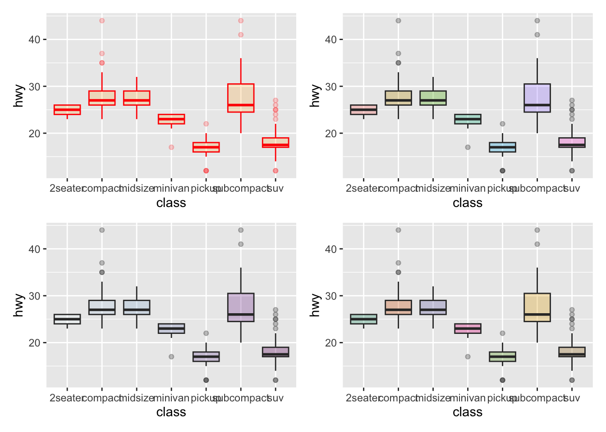
mpg |>
# 添加一列 'type'，用于标记是否高亮某个组
mutate(type = ifelse(class == "subcompact", "Highlighted", "Normal")) |>
ggplot(aes(x = class, y = hwy, fill = type, alpha = type)) +
geom_boxplot() +
scale_fill_manual(values = c("#69b3a2", "grey")) + # 手动设置填充色，高亮组为绿色，其余为灰色
scale_alpha_manual(values = c(1, 0.1)) + # 手动设置透明度，高亮组为不透明，其余为半透明
theme_ipsum() + # 使用 hrbrthemes 包的排版主题
theme(legend.position = "none") + # 不显示图例
xlab("") # 去除 x 轴标签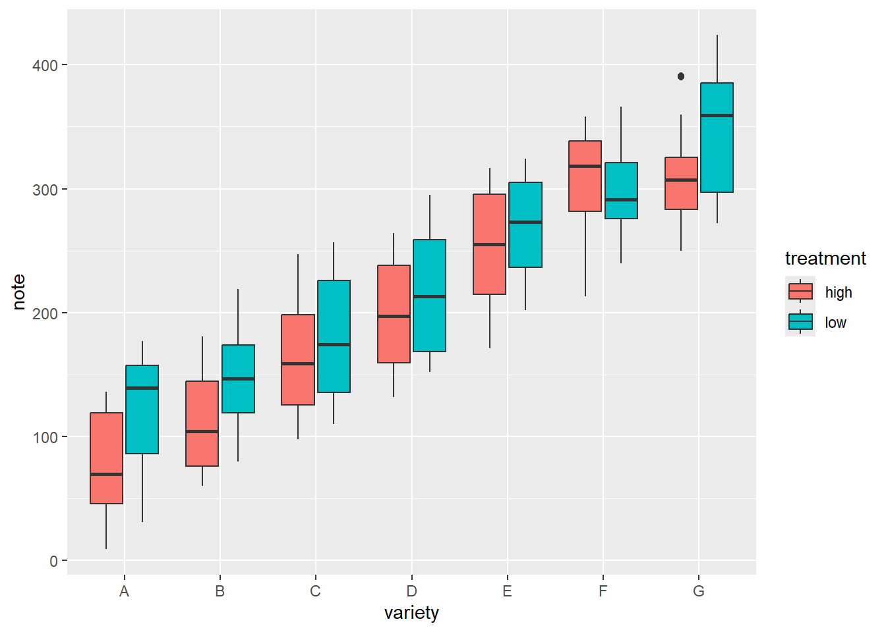
# 构造数据
variety = rep(LETTERS[1:7], each = 40) # 7种品种，每种40个观测
treatment = rep(c("high", "low"), each = 20) # 处理分为high和low，每组20个观测
note = seq(1:280) + sample(1:150, 280, replace = TRUE) # 生成note变量，添加一定随机性
data2 = data.frame(variety, treatment, note) # 组合成数据框
# 分组箱线图
ggplot(data2, aes(x = variety, y = note, fill = treatment)) +
geom_boxplot()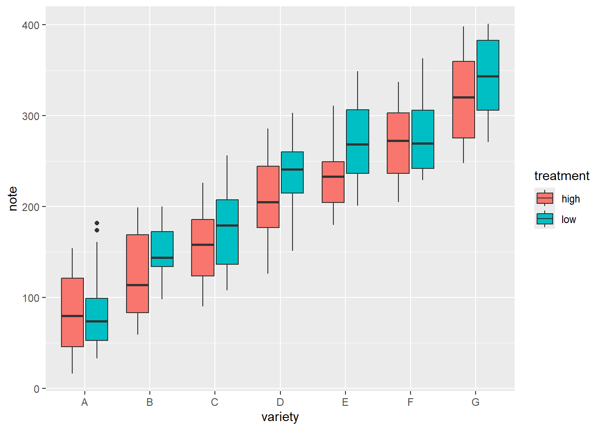
# 少分面箱线图
ggplot(data2, aes(x=variety, y=note, fill=treatment)) +
geom_boxplot() +
facet_wrap(~treatment)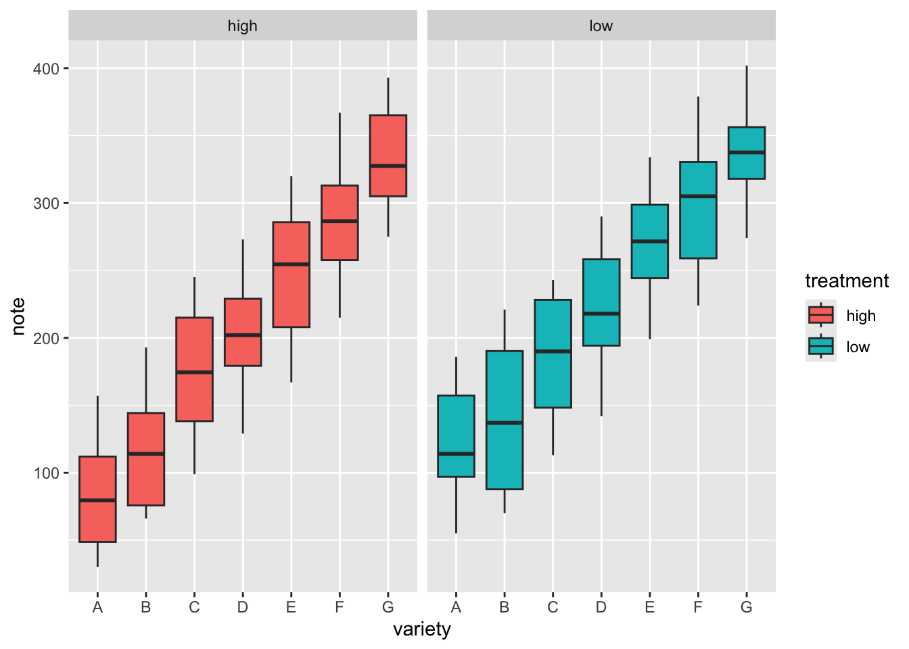
# 多分面箱线图
ggplot(data2, aes(x=variety, y=note, fill=treatment)) +
geom_boxplot() +
facet_wrap(~variety, scale="free") # 自由y轴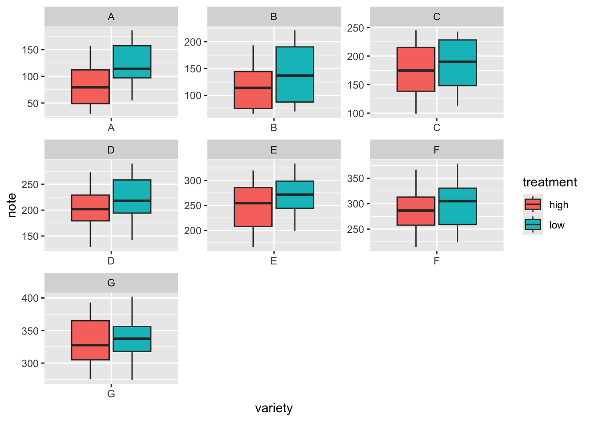
让箱线图的宽度与样本量成正比
# 转换为因子类型
mpg$drv <- as.factor(mpg$drv)
# 创建x轴标签，包含每个drv水平的名称及其对应的样本量
n_xlab <- str_glue("{levels(mpg$drv)}\n(N={table(mpg$drv)})")
ggplot(mpg, aes(x = drv, y = hwy, fill = drv)) +
geom_boxplot(varwidth = TRUE, alpha = 0.2) + # varwidth = TRUE 不等宽
scale_x_discrete(labels = n_xlab) +
theme(legend.position = "none")把连续变量分箱后再绘制箱线图。
diamonds |>
mutate(bin = cut_width(carat, width = 0.5, boundary = 0)) |>
ggplot(aes(x = bin, y = price)) +
geom_boxplot() 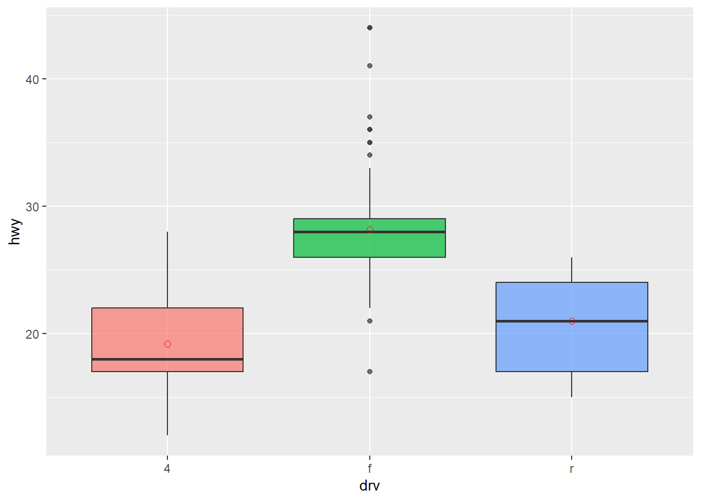
ggplot(mpg, aes(x=drv, y=hwy, fill=drv)) +
geom_boxplot(alpha=0.7) +
stat_summary(fun=mean, geom="point", shape=1, size=2, color = 'red') +
theme(legend.position="none") 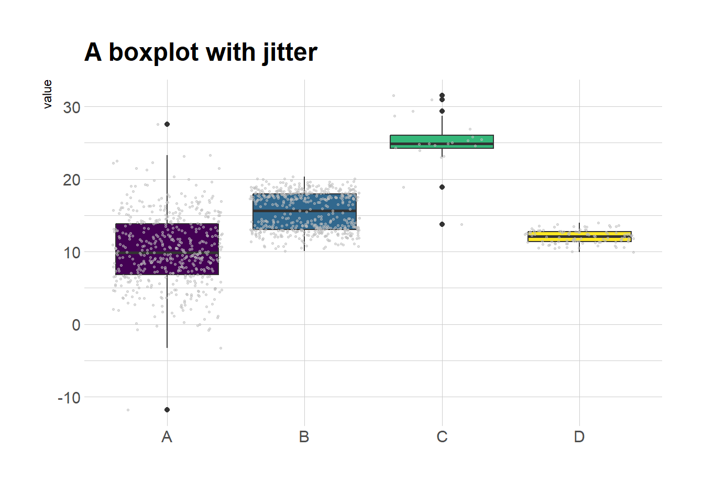
# data1 是之前创建的数据集
data1 |>
ggplot( aes(x=name, y=value, fill=name)) +
geom_boxplot() +
scale_fill_viridis(discrete = TRUE) + # 好看的色盲友好型颜色,离散变量
geom_jitter(color="grey", size=0.5, alpha=0.5) +
theme_ipsum() + # 更适合排版的主题
theme(legend.position="none") +
labs(x = "") +
ggtitle("A boxplot with jitter")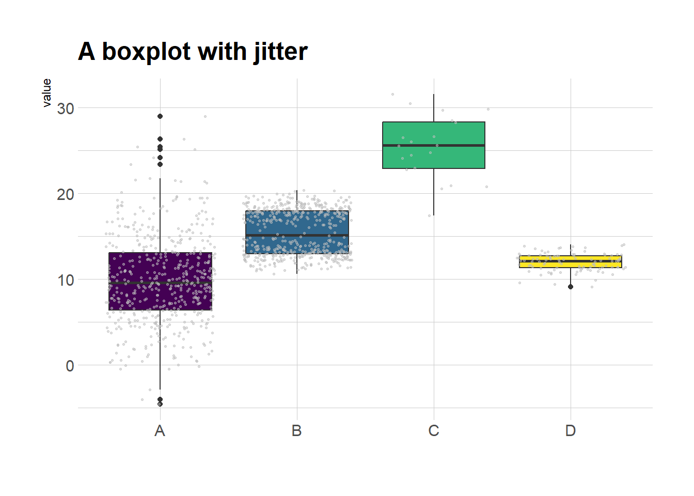
ggExtra包来实现更复杂（花哨）的图形，在ggplot2散点图的基础上再叠加箱线图、密度曲线等。
# 创建ggplot散点图
p <- ggplot(mtcars, aes(x = wt, y = mpg, color = cyl, size = cyl)) +
geom_point() +
theme(legend.position = "none")
ggMarginal(p, type = "histogram")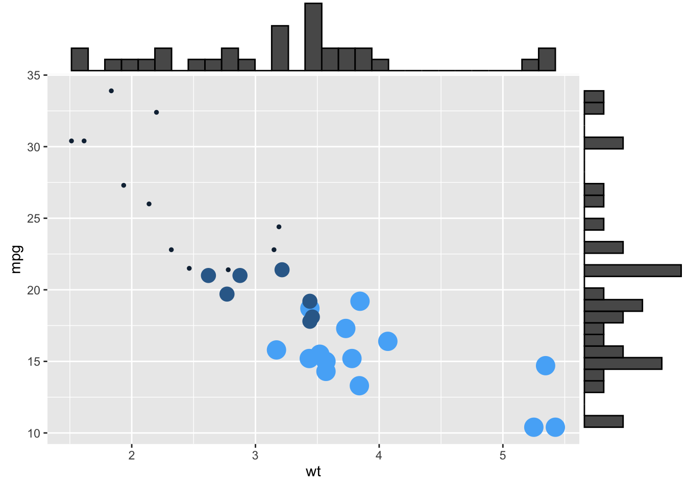
ggMarginal(p, type = "density")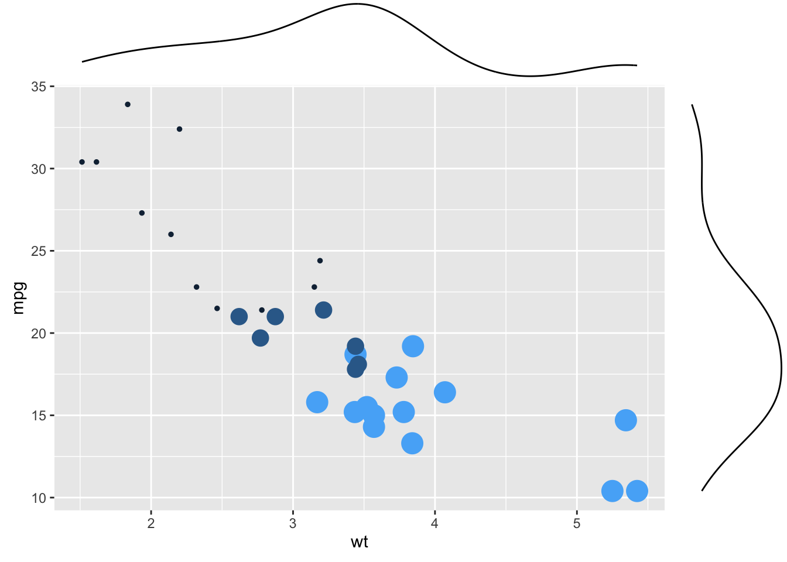
ggMarginal(p, type = "boxplot")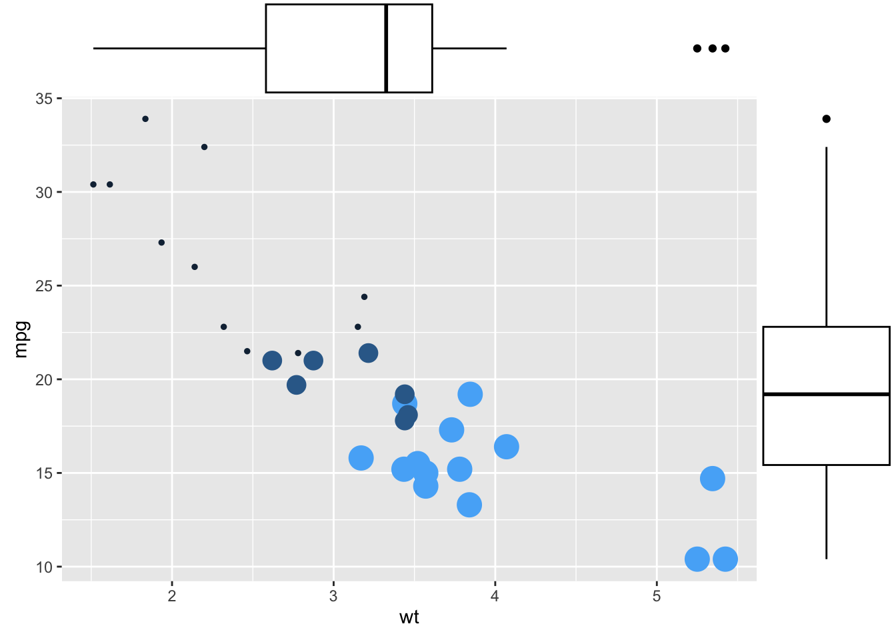
还可以定制化样式：
# 设置边际直方图的尺寸大小为10
ggMarginal(p, type = "histogram", size = 10)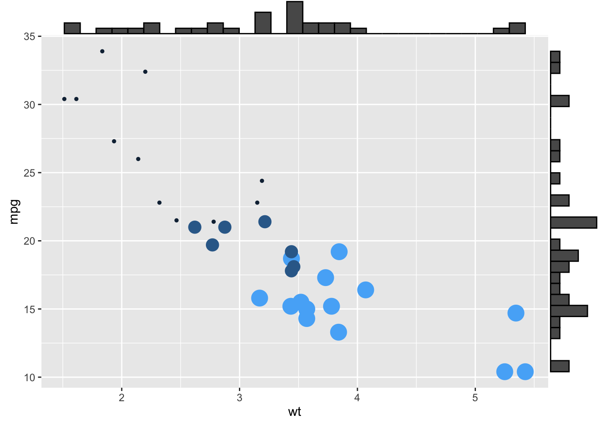
# 设置边际直方图的填充颜色为slateblue，x轴直方图分箱数为10
ggMarginal(p, type = "histogram", fill = "slateblue", xparams = list(bins = 10))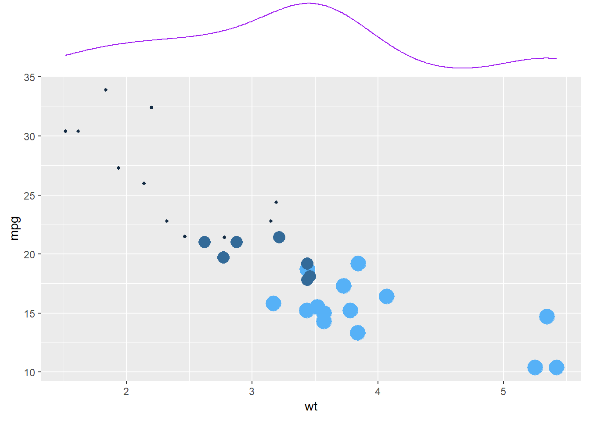
# 只在x轴添加边际图，边际图颜色为紫色，尺寸为4
ggMarginal(p, margins = 'x', color = "purple", size = 4)
主要是通过boxplot()函数.
但是 base R 多看一秒都是浪费时间,直接ggplot2吧.
如果实在想学,可以看 r-graph-gallery 的文档。
# 自动安装packages
if(!require(ggstatsplot)) {
install.packages(
"ggstatsplot",
repos = "https://cloud.r-project.org"
)
}
有二进制版本，但源代码版本更新:
binary source needs_compilation
doBy 4.6.27 4.7.0 FALSE
程序包'rbibutils'打开成功，MD5和检查也通过
程序包'Rdpack'打开成功，MD5和检查也通过
程序包'cowplot'打开成功，MD5和检查也通过
程序包'Deriv'打开成功，MD5和检查也通过
程序包'microbenchmark'打开成功，MD5和检查也通过
程序包'SparseM'打开成功，MD5和检查也通过
程序包'minqa'打开成功，MD5和检查也通过
程序包'nloptr'打开成功，MD5和检查也通过
程序包'reformulas'打开成功，MD5和检查也通过
程序包'carData'打开成功，MD5和检查也通过
程序包'abind'打开成功，MD5和检查也通过
程序包'Formula'打开成功，MD5和检查也通过
程序包'quantreg'打开成功，MD5和检查也通过
程序包'elliptic'打开成功，MD5和检查也通过
程序包'contfrac'打开成功，MD5和检查也通过
程序包'deSolve'打开成功，MD5和检查也通过
程序包'plyr'打开成功，MD5和检查也通过
程序包'lme4'打开成功，MD5和检查也通过
程序包'pbkrtest'打开成功，MD5和检查也通过
程序包'lmerTest'打开成功，MD5和检查也通过
程序包'car'打开成功，MD5和检查也通过
程序包'coda'打开成功，MD5和检查也通过
程序包'pbapply'打开成功，MD5和检查也通过
程序包'mvtnorm'打开成功，MD5和检查也通过
程序包'MatrixModels'打开成功，MD5和检查也通过
程序包'hypergeo'打开成功，MD5和检查也通过
程序包'RcppEigen'打开成功，MD5和检查也通过
程序包'multcompView'打开成功，MD5和检查也通过
程序包'gmp'打开成功，MD5和检查也通过
程序包'Rmpfr'打开成功，MD5和检查也通过
程序包'SuppDists'打开成功，MD5和检查也通过
程序包'kSamples'打开成功，MD5和检查也通过
程序包'BWStest'打开成功，MD5和检查也通过
程序包'desc'打开成功，MD5和检查也通过
程序包'RcppParallel'打开成功，MD5和检查也通过
程序包'reshape'打开成功，MD5和检查也通过
程序包'bayestestR'打开成功，MD5和检查也通过
程序包'reshape2'打开成功，MD5和检查也通过
程序包'prismatic'打开成功，MD5和检查也通过
程序包'afex'打开成功，MD5和检查也通过
程序包'BayesFactor'打开成功，MD5和检查也通过
程序包'effectsize'打开成功，MD5和检查也通过
程序包'PMCMRplus'打开成功，MD5和检查也通过
程序包'rstantools'打开成功，MD5和检查也通过
程序包'WRS2'打开成功，MD5和检查也通过
程序包'zeallot'打开成功，MD5和检查也通过
程序包'correlation'打开成功，MD5和检查也通过
程序包'datawizard'打开成功，MD5和检查也通过
程序包'ggcorrplot'打开成功，MD5和检查也通过
程序包'ggrepel'打开成功，MD5和检查也通过
程序包'ggside'打开成功，MD5和检查也通过
程序包'ggsignif'打开成功，MD5和检查也通过
程序包'insight'打开成功，MD5和检查也通过
程序包'paletteer'打开成功，MD5和检查也通过
程序包'parameters'打开成功，MD5和检查也通过
程序包'performance'打开成功，MD5和检查也通过
程序包'statsExpressions'打开成功，MD5和检查也通过
程序包'ggstatsplot'打开成功，MD5和检查也通过
下载的二进制程序包在
C:\Users\14913\AppData\Local\Temp\RtmpURTTMt\downloaded_packages里if(!require(palmerpenguins)) {
install.packages(
"palmerpenguins",
repos = "https://cloud.r-project.org"
)
}程序包'palmerpenguins'打开成功，MD5和检查也通过
下载的二进制程序包在
C:\Users\14913\AppData\Local\Temp\RtmpURTTMt\downloaded_packages里palmerpenguins::penguins |>
drop_na() |>
ggstatsplot::ggbetweenstats(x = species, y = flipper_length_mm, 1)
在 ggstatsplot 可以看到进一步美化。
或者
在 tidyplots 有另一种风格的统计箱线图。